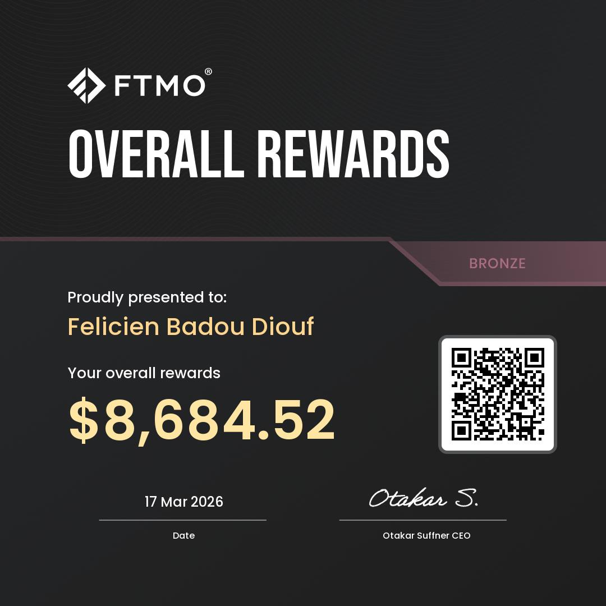
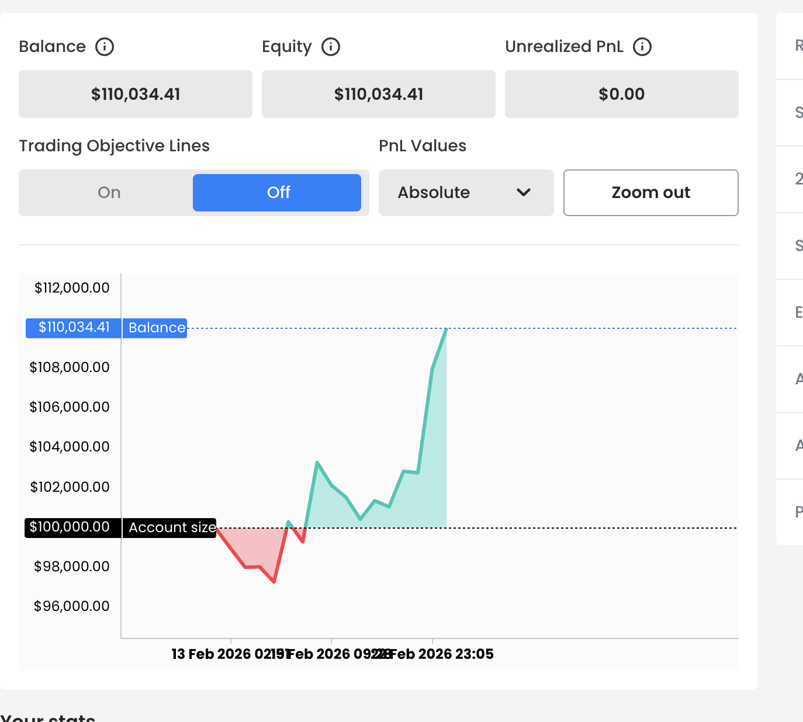

Short-term systematic strategies focused on intraday volatility and liquidity imbalances.
Designed to generate uncorrelated, risk-managed returns with strict capital control.
View Track RecordBotIQ Trade operates as an algorithmic trading desk focused on systematic strategies and capital allocation.
Investors retain full control of their capital while trades are executed through a structured, risk-managed system.
Our approach prioritizes capital preservation, disciplined execution, and risk-adjusted returns.
We work with a limited number of partners looking to allocate capital into systematic trading strategies.
The model is performance-based — we only get paid when results are generated.
Currently onboarding a limited number of capital partners before scaling.
Request Allocation AccessLive since December 2025 (~5 months)
Total Return
Max Drawdown
Profit Factor
Risk / Reward
Win Rate
Expectancy
Performance aggregated across multiple funded accounts (FTMO). All results are based on live trading conditions.
The strategy prioritizes capital preservation first, then performance.
The strategy focuses on intraday volatility and liquidity imbalances, capturing short-term dislocations during high-activity sessions.
Execution is reduced during low-conviction environments to preserve capital.
The edge is derived from timing, execution discipline, and asymmetric risk/reward positioning.


Backtesting is used for robustness validation only and is not representative of live performance.
Félicien Diouf — Quantitative Trader & Algorithmic Developer
Operating systematic strategies with verified performance and disciplined risk management.
BotIQ Trade does not manage client funds directly. Investors retain full control of their accounts at all times.
Trading involves risk. Past performance is not indicative of future results.